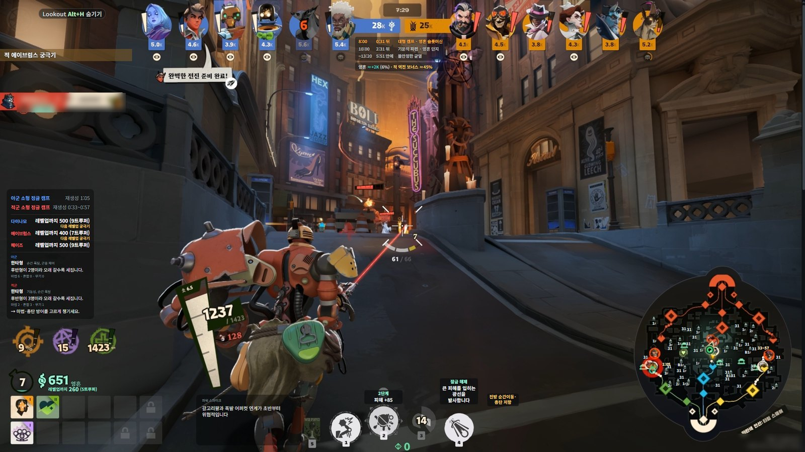
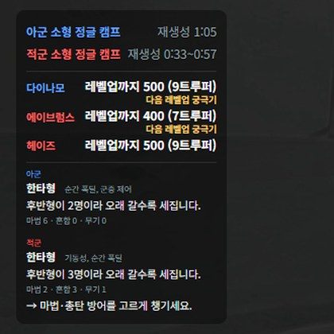
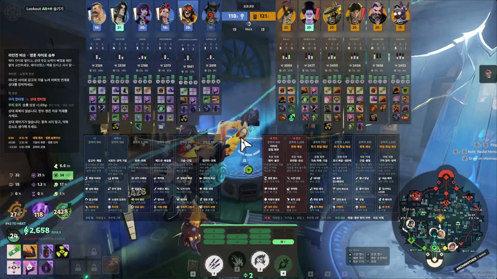
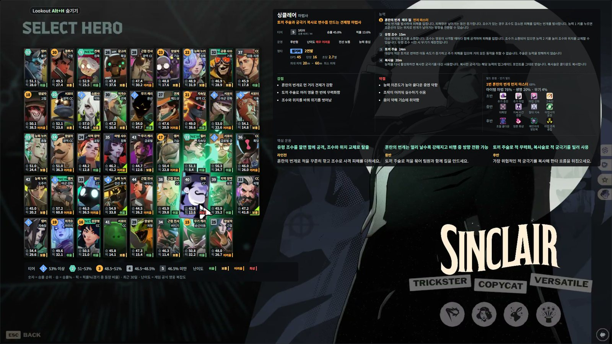

Lookout은 무엇을 보여주나요?
데드락 경기 화면 옆에 정글 캠프 재생성 시간, 시간 알림, 영웅 정보와 능력 투자 효과를 표시하는 Windows 오버레이입니다. 표시할 항목은 설정에서 고를 수 있습니다.
룩아웃(Lookout)은 데드락을 하면서 옆에 켜 두는 무료 도우미 앱입니다.
게임 화면을 읽어서 지금 챙길 것만 왼쪽에 조용히 띄웁니다. 정글이 언제 다시 생기는지, 웨이브를 민 뒤 어디를 돌고 올지, 상대 궁극기가 열렸는지.
Windows 전용 · 게임은 창 모드 또는 테두리 없는 창 모드

설치 파일 실행받은 Lookout-Setup.exe를 실행합니다. 새 버전은 앱이 알아서 받아 둡니다.
게임 화면 모드Deadlock을 창 모드나 테두리 없는 창 모드로 켭니다.
경기 시작경기에 들어가면 오버레이가 뜹니다. F10으로 숨기거나 다시 띄웁니다.



대시보드 지도의 동선 페이지. 내 전선과 팀에 맞춘 한 바퀴. 가는 길(A)과 오는 길(B)에 챙길 상자, 걸리는 시간까지.
그 밖에데드락 경기 화면 옆에 정글 캠프 재생성 시간, 시간 알림, 영웅 정보와 능력 투자 효과를 표시하는 Windows 오버레이입니다. 표시할 항목은 설정에서 고를 수 있습니다.
앱은 무료이며 Windows에서 실행합니다. 데드락은 창 모드나 테두리 없는 창 모드로 설정하세요. 대시보드와 웹사이트에는 광고가 있습니다.
공략, 영웅 정보·빌드, 조합 분석, 지도와 라인 동선은 브라우저에서 볼 수 있습니다. 경기 위에 표시하는 오버레이를 쓰려면 Windows 앱을 설치해야 합니다.
기본 화면 인식은 이 PC에서 처리합니다. 선택 기능인 게임 HUD 연동은 게임 폴더의 모드 파일과 설정을 사용하며 백업 후 적용합니다. 게임 메모리 읽기, DLL 주입이나 패킷 조작은 사용하지 않습니다. Valve와 관계없는 팬 제작 도구입니다.
PC와 켠 기능에 따라 달라 고정된 FPS 감소량을 보장하지 않습니다. 설정에서 Lookout의 CPU 사용량을 확인하고 필요 없는 항목을 끌 수 있습니다. 0.1.14부터 F10으로 숨기면 화면 인식도 일시 중지합니다.
기본 단축키는 F10 표시·숨기기, F11 미니맵 자세히 보기입니다. 설정에서 단축키, 표시 항목, 글자 크기와 배경 농도를 바꿀 수 있습니다.
기본 화면 인식은 이 PC에서 처리하며 게임 파일을 바꾸지 않습니다. 선택 기능인 게임 HUD 연동을 켜면 모드 파일 1개와 gameinfo.gi의 3줄을 백업 후 적용하며, 대시보드에서 제거할 수 있습니다. 피드백 스크린샷은 직접 선택하고 전송에 동의한 경우에만 보냅니다. 게임 메모리를 읽지 않는 팬 제작 도구이며 Valve와 관계없습니다.